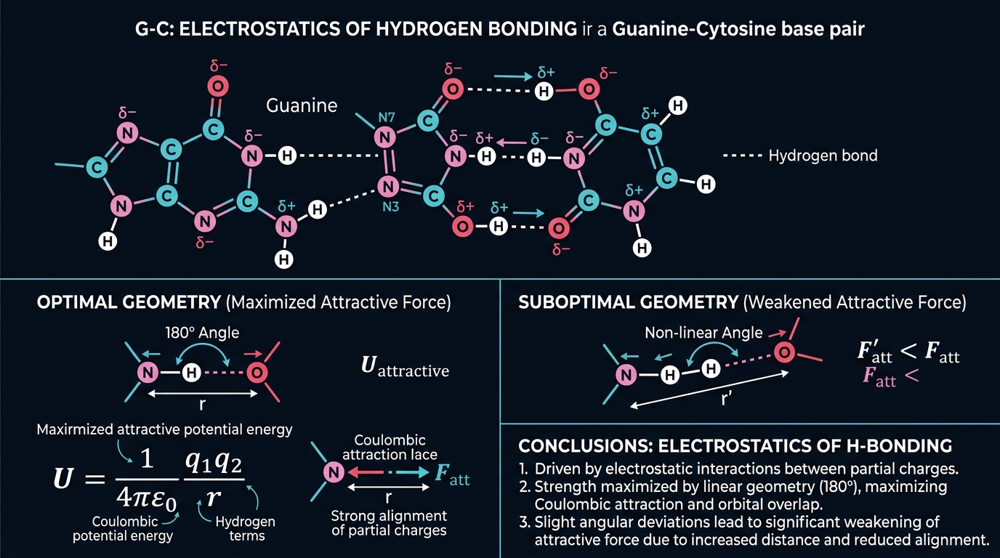
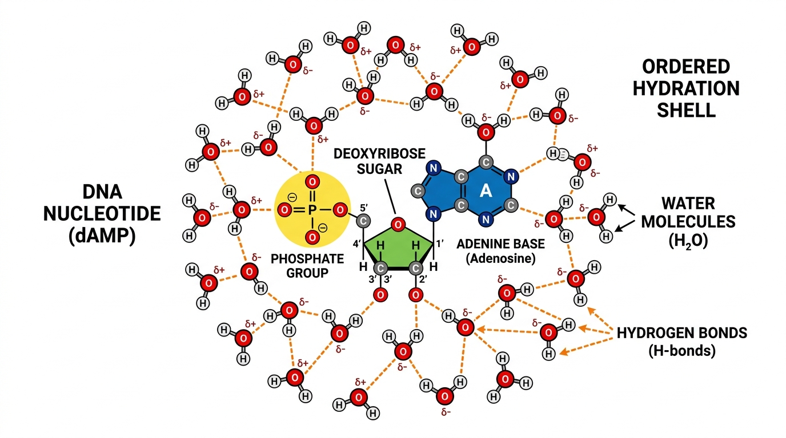

Topic 5
Hydrogen Bonding Enthalpy & Solvation Penalty
The Thermodynamic Cost of a DNA Mismatch
Why This Matters
When most people think about a DNA mismatch, they think about it purely as a structural error. But structurally, it is a thermodynamic transaction.
The ultimate cost of a mismatch comes down to exactly two physical forces:
- Hydrogen Bond Disruption (Enthalpy): A canonical G–C pair forms 3 optimal hydrogen bonds, while an A–T pair forms 2. A mismatch either lacks hydrogen bonds entirely or forms weak, geometrically strained bonds.
- Desolvation Costs: Unpaired hydrogen bond sites on a mismatched base must shed their bound water molecules to enter the hydrophobic active site of DNA polymerase. This creates a massive thermodynamic penalty.
If these thermodynamic costs are not perfectly balanced out, the nucleotide is rejected.
↓
Stripping Water (Desolvation Penalty)
↓
Bonding (Enthalpy)
↓
Thermodynamic Balance
↓
Accurate Base Calling
Why Should a Bioinformatician Care?
As computational biologists, we routinely look at Transition vs. Transversion mutation rates in variant calling algorithms.
Why do Transitions (A ↔ G, C ↔ T) occur much more frequently in evolution than Transversions (A ↔ C, G ↔ T)?
Because the Enthalpy and Solvation Penalty of a transition mismatch is slightly less severe than a transversion mismatch. The physical equations dictate the evolutionary mutation rates we program into our computational models.
Where Does This Fit?
↓
Desolvation Penalty (Stripping water)
↓
Hydrogen Bond Enthalpy (Forming new bonds)
↓
Thermodynamic Balance (\(\Delta G\))
↓
Evolutionary Mutation Rates
↓
Bioinformatics Substitution Matrices
Step 1 — Hydrogen Bond Disruption (Enthalpy)
Enthalpy (\(\Delta H\)) is a measure of total heat energy. When chemical bonds form, energy is released. When bonds break, energy is required.
A canonical G–C pair forms 3 optimal, perfectly aligned hydrogen bonds. A canonical A–T pair forms 2.
The energy of these bonds is driven by electrostatic attraction (Coulomb's Law):
\(E \propto \frac{q_1 q_2}{r}\)
Let's break down these symbols and what they mean:
- \(E\) (Energy): The bond strength.
- \(q_1\) and \(q_2\) (Charges): The partial positive (\(\delta+\)) and negative (\(\delta-\)) charges on the Nitrogen/Oxygen and Hydrogen atoms.
- \(r\) (Distance): The distance between the atoms.
Why are we studying this?
Because the distance (\(r\)) is on the bottom of the fraction, the bond only works if the atoms are perfectly close together. If they move even a tiny bit apart, the bond breaks.
A mismatched base pair is the wrong shape, pushing the atoms too far apart. Because this distance is too large, the bond fails and provides zero Enthalpy (\(\Delta H\)).

Step 2 — Desolvation Costs (Stripping the Water)
Nothing in biology happens in a vacuum. Everything happens in water.
The Hydration Shell
Free floating nucleotides inside the nucleus have unpaired hydrogen bond donor and acceptor sites. Because water (\(H_2O\)) is highly polar, it eagerly forms a tight, structured cage of hydrogen bonds around these exposed sites. This is called the Hydration Shell.
The Thermodynamic Toll Booth
In order for a nucleotide to enter the hydrophobic, enclosed active site of DNA polymerase, it must shed its bound water molecules. Breaking these pre-existing water-nucleotide hydrogen bonds requires a massive input of energy. This energetic cost is called the Desolvation Penalty.

The Perfect Balance (Canonical Pair)
When a correct canonical nucleotide (like an A matching a T) enters the polymerase, it pays the Desolvation Penalty to strip its water.
However, because its geometry perfectly matches the template, it instantly forms optimal, short-distance hydrogen bonds. The Enthalpy (\(\Delta H\)) released by forming these new bonds is so massive that it completely pays back the Desolvation Penalty.
The thermodynamic books balance, the nucleotide is stable, and the polymerase incorporates the base.
Thermodynamic Bankruptcy (Mismatch)
When an incorrect base (like an A attempting to match with C) enters, it still has to pay the massive Desolvation Penalty to strip its water.
But because the geometry is wrong, it fails to form proper hydrogen bonds with the template. It does not regain full hydrogen-bonding energy. The nucleotide has paid the "water toll", but has no Enthalpy to balance the books.
The base is thermodynamically rejected and ejected back into solution.
Thermodynamics & Gibbs Free Energy (ΔG)
How does a slight energy difference result in DNA polymerase rejecting a mismatch? The answer lies in the Boltzmann Distribution.
The probability of a state existing is determined by the Boltzmann Distribution:
\(P \propto e^{-\frac{\Delta G}{RT}}\)
Let's break down these symbols:
- \(P\) (Probability): The likelihood that a specific base pair will form and stay together.
- \(e\) (Euler's number): A mathematical constant used for exponential growth.
- \(\Delta G\) (Gibbs Free Energy): The total energy "cost" (Enthalpy minus Desolvation). A negative number means it is stable.
- \(R\) (Gas constant) & \(T\) (Temperature): Represents the thermal heat constantly bumping into the molecules.
What is ΔΔG (Double Delta G)?
The difference in free energy between a correct pair and an incorrect mismatch is called \(\Delta\Delta G\).
Because the energy term (\(\Delta G\)) is in the exponent (the power of \(e\)), a tiny \(2 \text{ kcal/mol}\) difference in \(\Delta\Delta G\) translates into a massive, exponential difference in binding probability.
Think of it like a valley. A correct DNA pair sits in a deep, stable valley (Low \(\Delta G\)). An incorrect mismatched pair sits in a shallow, unstable valley (High \(\Delta G\)). Due to the exponential math above, the enzyme doesn't actively "decide"—it simply lets thermal physics do the filtering.
Drug Discovery Connection (Structural Bioinformatics)
This interplay between Desolvation and Enthalpy is exactly how we computationally model Drug Discovery.
Hydrogen Bonds
Docking software evaluates: Drug ↓ Hydrogen bond ↓ Protein residue
Strong hydrogen bonds result in lower binding free energy and better binding affinity. Programs such as AutoDock Vina, Glide, GOLD, and Rosetta all score hydrogen bonds using the exact same mathematical formulas we described above.
Desolvation Penalties in Drugs
When we design a drug to inhibit a cancer protein, the drug is floating in water. For the drug to bind to the protein, it must strip its hydration shell. If our drug design forms weak bonds with the protein, it will suffer "thermodynamic bankruptcy" just like a DNA mismatch and fail in clinical trials.
Molecular Docking Algorithms
Software like AutoDock Vina has a built-in scoring function that explicitly calculates the Desolvation Penalty. It penalizes the score for every polar atom on the drug that loses its water interaction but fails to find a new hydrogen bond partner inside the protein pocket.
Molecular Dynamics
In molecular dynamics simulations, we observe whether the protein-drug complex remains stable over time by simulating the exact water molecules surrounding the drug. If interactions weaken, \(\Delta G\) increases and the drug dissociates.
Bioinformatics Connection
What happens if this physical chemistry breaks down and DNA polymerase fails to enforce the desolvation penalty? Every downstream bioinformatics algorithm becomes unreliable.
1. Variant Calling & Disease Diagnosis
Variant callers explicitly assume that DNA replication is highly accurate due to chemical thermodynamics. If the Enthalpy/Desolvation balance failed, the baseline mutation rate would skyrocket. Software like GATK or DeepVariant would be flooded with false-positive SNVs (Single Nucleotide Variants). We would be unable to distinguish a true cancer-causing mutation from a random replication error, rendering clinical genomics useless.
2. Genome Assembly
Assemblers (like SPAdes or Flye) rely on overlapping reads to stitch genomes together. If chemistry produced many random errors, these overlaps would conflict. The software would attempt to resolve these conflicts by creating entirely false, fragmented, and ambiguous genome assemblies, breaking our ability to study new species.
3. Read Mapping & Alignment
Alignment algorithms (like BWA or Bowtie2) are computationally optimized by assuming there are only a few differences between a sequenced read and the reference genome. A high replication error rate would destroy this assumption, causing massive mapping quality drops and increasing ambiguous, unmapped reads.
Master Systems Overview
A unified visualization connecting Hydrogen Bonding Enthalpy to Bioinformatics.